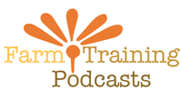

Welcome to the Foarm Training Podcasts home page. We hope to be up and running in the next few days with weekly programs on the topics you're most curious about: how to hoe effectively, growing organic vegetables, and many more.